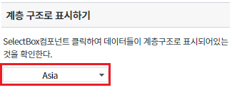
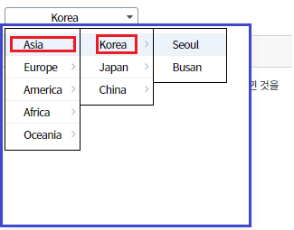
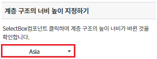
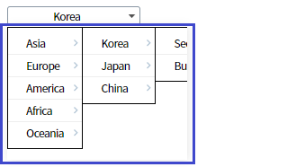
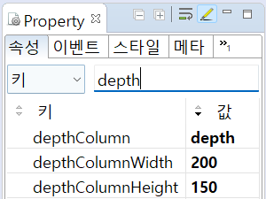
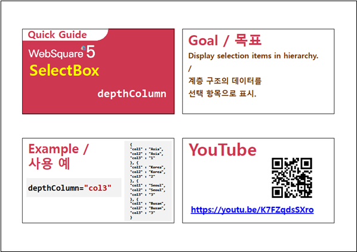
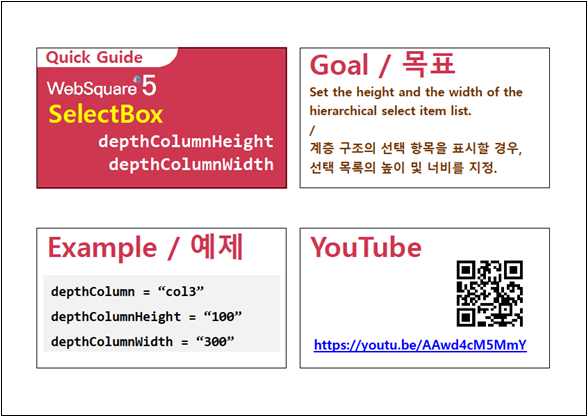

SelectBox컴포넌트를 계층 구조의 데이터를 선택 항목으로 표시하는 방법에 관한 예제입니다. 이 기능은 아래의 속성으로 사용할 수 있습니다. - depthColumn : 목록을 계층 구조로 보여줄 때 사용하는 속성. - depthColumnHeight : depthColumn 기능 사용 시 목록의 높이 값. - depthColumnWidth : depthColumn 기능 사용 시 목록의 너비 값.
계층 구조로 표시하기
계층 구조의 너비 높이 지정하기
아래 그림과 같이 SelectBox를 클릭합니다.
[브라우저(Chrome) 실행 예시]

'Asia'를 클릭, 'Korea'를 클릭 시 아래의 이미지와 같이 SelectBox컴포넌트가 계층 구조로 되어있는 것을 확인합니다.
[브라우저(Chrome) 실행 예시]

아래 그림과 같이 SelectBox를 클릭합니다.
[브라우저(Chrome) 실행 예시]

아래 이미지와 같이 3.1의 STEP2와 비교하였을 때보다 높이, 너비가 다른 것을 확인할 수 있습니다.
[브라우저(Chrome) 실행 예시]

SelectBox의 속성을 정의합니다.
[필수] depthColumn //목록을 계층 구조로 보여줄 때 사용하는 속성.
treeview, gridView drilldown의 deapth와 동일한 개념이다. depth값이 동일한 항목끼리 묶어서 계층 구조로 목록을 보여준다.
depth값이 1인 항목들이 제일 처음 나타나며, 해당 항목을 선택하면 그 다음 depth가 2인 항목들이 나타나고 그 다음 항목을 선택하면 depth가 3인 항목이 나타나는 구조이다.
[필수] depthColumnHeight //depthColumn 기능 사용 시 목록의 높이값(px). 이 값을 지정하지 않으면 목록의 높이가 세로 스크롤이 생기지 않는 최소 높이로 자동 계산된다.
[필수] depthColumnWidth //depthColumn 기능 사용 시 목록의 넓이값(px). 이 값을 지정하지 않으면 목록의 넓이가 가로 스크롤이 생기지 않는 최소 길이로 자동 계산된다.
그림 1.웹스퀘어5 SP5 스튜디오의 Property View(속성창) 예시

<!-- selectBox 의 소스 본문 예시 --> <xf:select1 id="sbx_exam2" depthColumn="depth" depthColumnWidth="200" depthColumnHeight="150"> <xf:choices> <xf:itemset nodeset="data:dlt_dataList1"> <xf:label ref="name"></xf:label> <xf:value ref="Code"></xf:value> </xf:itemset> </xf:choices> </xf:select1>
depthColumn
depthColumnHeight
depthColumnWidth
[웹스퀘어5 SP5 개발 가이드] SelectBox
링크 : https://docs1.inswave.com/sp5_user_guide/8df43d1f59fab704#641326163f434b17
[웹스퀘어5 SP5 개발 가이드] SelectBox 계층 구조의 선택 항목 표시하기
링크 : https://docs1.inswave.com/sp5_user_guide/8df43d1f59fab704#43ec86cfd9e70585
[웹스퀘어5 SP5 개발 가이드] SelectBox 선택 목록의 높이 및 너비 설정
링크 : https://docs1.inswave.com/sp5_user_guide/8df43d1f59fab704#b8a6fe20d025823e
SelectBox 계층 구조의 선택 항목 표시하기
링크 : https://youtu.be/K7FZqdsSXro

SelectBox 선택 목록의 높이 및 너비 설정
링크 : https://youtu.be/AAwd4cM5MmY
